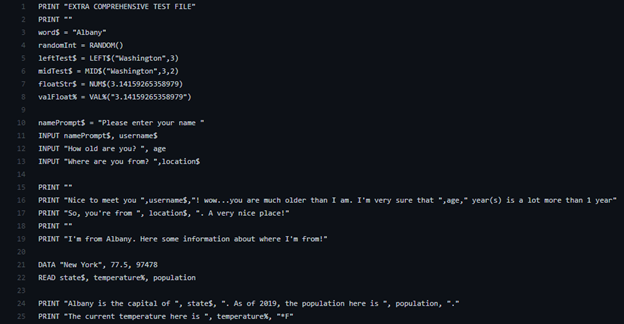
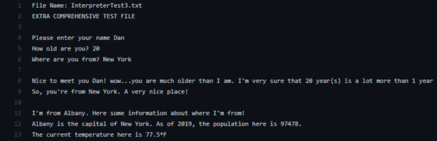

Blackjack using Java Swing
This project started as a text-based project. Over a weekend, I designed and built a text-based version of Blackjack. That version had hit and stand functions for the player and was designed to be single player with an automated dealer.
However, a text-based game is too simple. I wanted to make it better and decided to convert the text-based game to one with a GUI using Java Swing. But, I didn't know any Java Swing at the time. To complete this project, I had to learn the basics of Java Swing and how to use it to design a UI with buttons linked to action listeners.
Unlike traditional Blackjack at a casino, this version is completely up to luck. The card drawing algorithm generates a pseudorandom number which corresponds to a card in the deck. The player hits until they choose to stand whereas the dealer must hit until their hand value is at least 17. In multiple test runs, the player has busted their hand just because the algorithm picked two cards with values of 10.
Source Code is available on Github
AZN Flush Discord Bot
This card game gained popularity right around the start of the coronavirus pandemic. Though designed to be played in person, my friends and I quickly shifted the game to be played online using Discord.
One of the main motivations for me creating this bot was how difficult it was to keep track of whose turn it currently was. Some specific cards only apply to the player reading it. The game, when played in person, allowed for each player to draw each card. When playing online, whoever had the deck had to draw all the cards and apply them in order of whose turn it currently was.
On top of keeping track of whose turn it currently was, it also includes features that make the game easier to play such as a 3 second countdown timer and keeping track of how many cards a player has gone through.
Source Code is available on Github
BASIC Interpreter
Example Input
Example Output
This was a semester long project for one of my university courses and it is by far the most comprehensive programming project I've ever completed.
A programming language interpreters purpose is to take code from one language and execute it using another language. In this project, I interpreted a simplified version of the BASIC Programming Language using Java.
There was three major components of this project: Lexer, Parser, Interpreter.
- The job of the Lexer was to break down Strings into different tokens. For example, "PRINT 2 + 2" would be separated into "PRINT", "NUMBER(2)", "PLUS", "NUMBER(2)".
- The job of the Parser was to take the tokens from the Lexer and form specific nodes with them. The "2 + 2" from earlier would be parsed into "MathOpNode(2, +, 2)" signifying that it can be evaluated into a number later on. The entire line "PRINT 2 + 2" would be parsed as "PrintNode([MathOpNode(2, +, 2)])" signifying that it is something to be printed out later on.
- The job of the Interpreter was to use the specified language, in this project Java, and execute all the parsed nodes. The example of "PrintNode([MathOpNode(2, +, 2)])" from the parser would create an output of "4" in the console of the Java program.